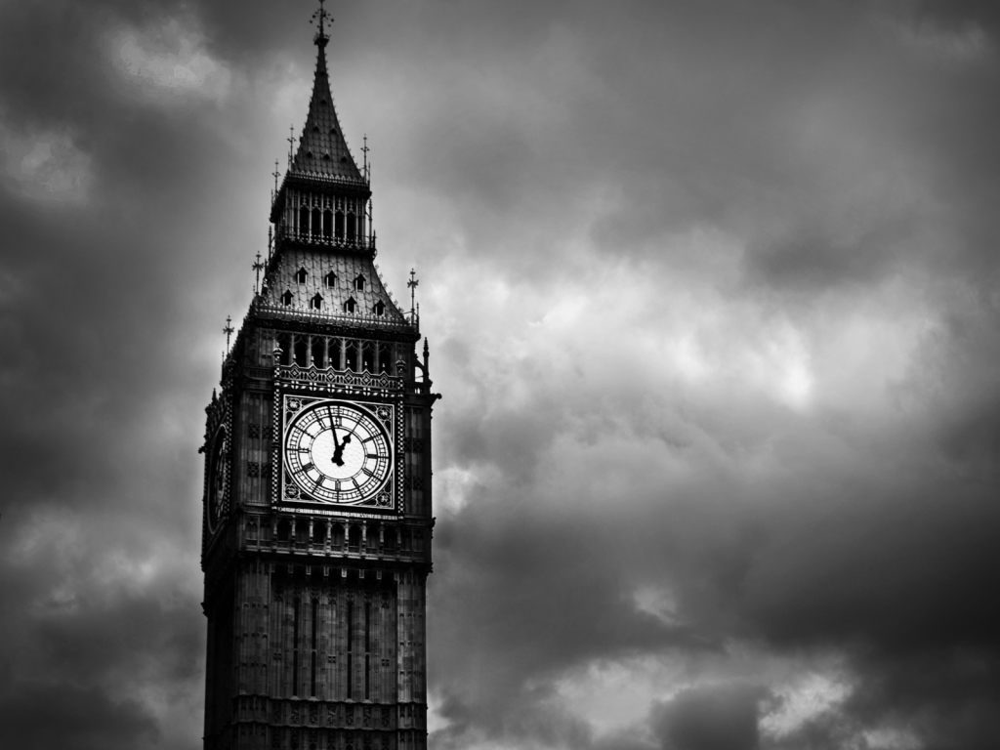

Big Ben este unul dintre cele mai importante obiective turistice in Londra, devenind aproape o emblema a capitalei britanice. Big Ben arata de-a dreptul incantator noaptea cand fatada si ceasurile de pe fiecare fata sunt iluminate. Atunci cand Parlamentul se afla in sesiune o lumina straluceste peste fatada ceasului. Cadranele ceasului au o suprafata de peste doi metri patrati, iar minutarul are peste 4 metri. Big Ben are un pendul urias care este reglat de un sac de monezi si este un ceas excelent care s-a oprit foarte rar.
Numele de Big Ben nu se refera de fapt la turnul ceasului propriu-zis, ci la clopotul de 13 tone din interiorul turnului. Clopotul a fost numit astfel dupa primul om ce a fost delegat sa lucreze la ridicarea constructiei - Benjamin Hall. Acest clopot provine din vechiul palat Westminster si a fost daruit diaconului de la Catedrala Sf. Paul (St. Paul’s Cathedral) de catre William al III-lea. Inainte de a se intoarce la Westminster pentru a isi ocupa locul in actuala casa, a fost reconditionat la Whitechapel in anul 1858. Prima transmisiune a BBC a fost deschisa de sunetul de la Big Ben in 1923 la data de 31 decembrie. Inca exista un microfon in turn conectat la sediul British Broadcasting Corporation (BBC).
In timpul celui de-al Doilea Razboi Mondial, in 1941, o bomba puternica a distrus Camera Comunelor, parte din Sediul Parlamentului din Londra (Houses of Parliament), dar turnul cu ceas a ramas intact iar Big Ben a continuat sa masoare orele si minutele. Sunetul sau a fost transmit prin radio poporului britanic si intregii lumi, ca un indemn la speranta pentru toti cei care l-au auzit.
Exista 11 camere in interiorul turnului unde membrii ai Parlamentului pot fi inchisi pentru incalcari ale reglemetarilor constitutionale. Acest lucru este foarte rar, ultimul incident de acest fel fiind inregistrat in anul 1880. Turnul Big Ben nu este deschis spre vizitare publicului larg insa pe exterior este oricum mult mai impresionant.